Configurando Bitwarden: Un tutorial paso a paso
Aunque hay diversos gestores de contraseñas disponibles para distintos dispositivos y plataformas, todos comparten funciones básicas con algunas diferencias menores. En esta guía, nos centraremos en cómo configurar y usar Bitwarden, uno de los gestores gratuitos más populares, para manejar de manera eficiente y segura nuestras credenciales.
- Selección del gestor: En nuestro caso, como hemos dicho, se ha elegido Bitwarden.
- Instalación de la aplicación: Descarga Bitwarden desde su sitio web oficial o tiendas oficiales de aplicaciones y procede con la instalación. En este caso vamos a proceder a la instalación de la extensión del navegador.
Accede al apartado de descargas de la web oficial, busca tu navegador habitual, y haz clic en descargar:
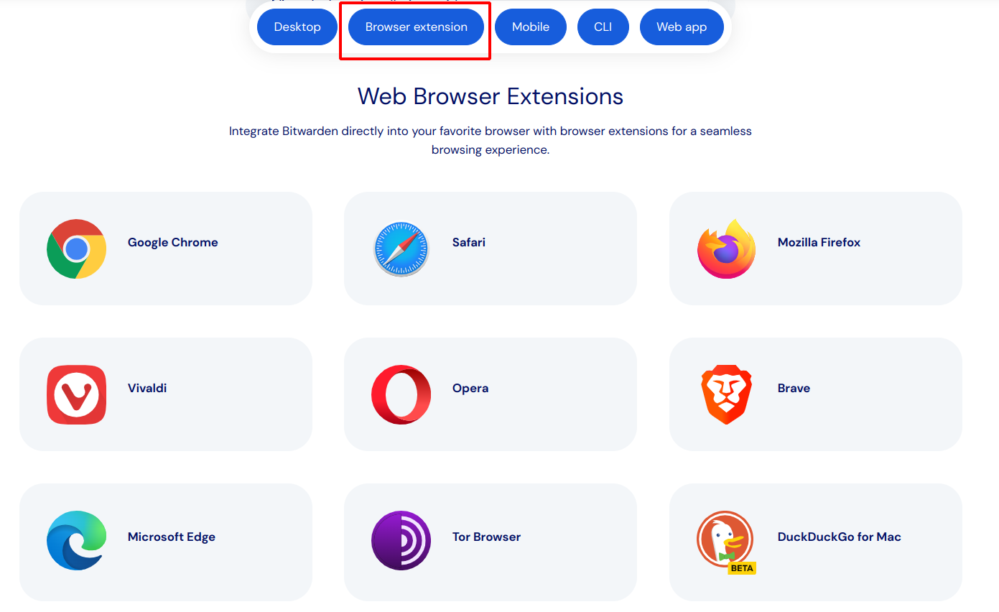
- Añade la extensión a tu navegador: Al hacer clic en descargar, se nos abrirá una pantalla que nos da la opción de añadir la extensión a nuestro navegador.
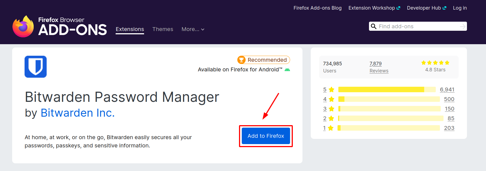
- Permisos: En la esquina superior derecha se nos despliega una ventana donde la aplicación pide los permisos que necesita para realizar sus funciones.
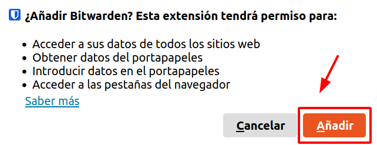
Le damos a añadir y a continuación aceptamos. Si queremos que se ejecute también cuando usemos el navegador en modo incógnito, tenemos que marcar la casilla correspondiente.
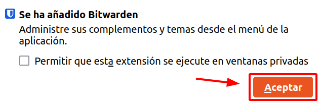
- Crear tu cuenta: Ya tenemos la extensión instalada, ahora abre Bitwarden y regístrate. Lo más importante es definir una contraseña maestra segura; ésta será tu llave maestra.
Hacemos clic en la opción de crear cuenta:
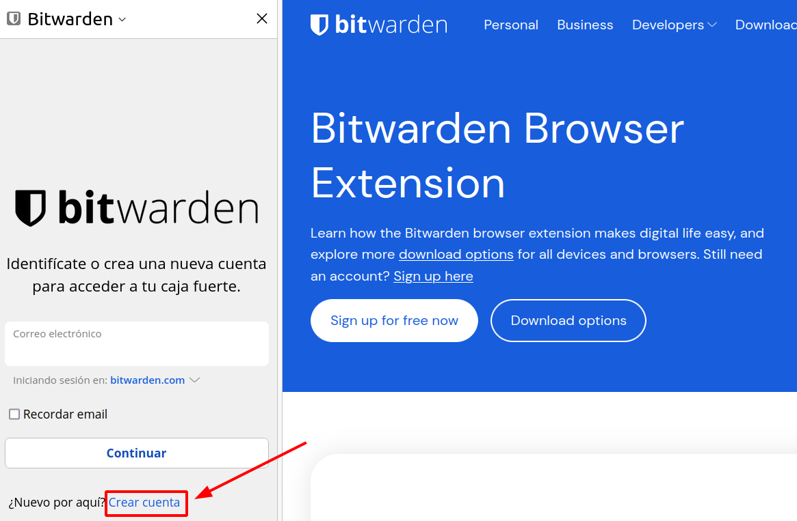
Y cumplimentamos los datos que nos solicita:
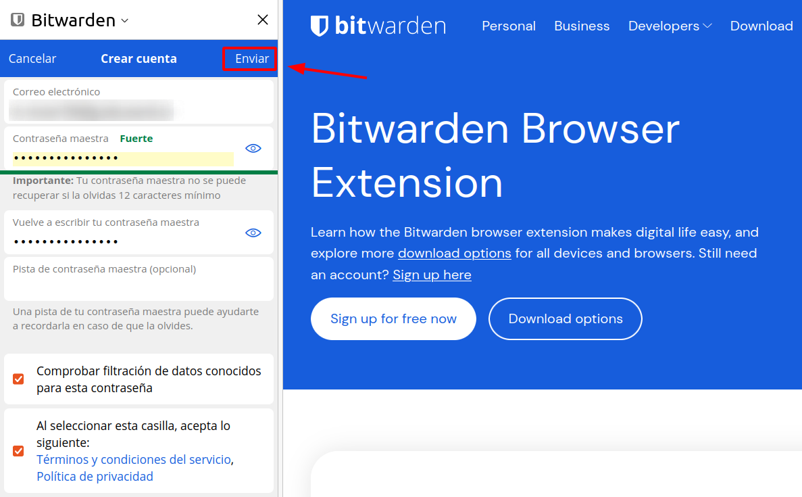
Una vez registrados, ya podemos iniciar sesión en la aplicación y comenzar a trabajar con ella.
- Agregar credenciales: Puedes comenzar a introducir tus contraseñas en Bitwarden manualmente o dejar que capture las credenciales al iniciar sesión en tus sitios web. Veamos como introducirlas manualmente.
En primer lugar, seleccionamos añadir elemento.
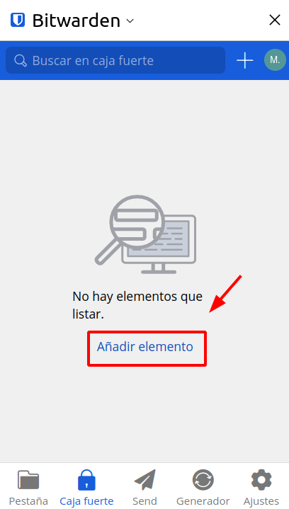
Cuando agregamos una nueva cuenta nos pide rellenar una serie de campos. Habitualmente, todos los gestores pedirán la URL o servicio para el que será utilizado, el nombre de usuario, la contraseña y algún comentario o nota que queramos añadir.
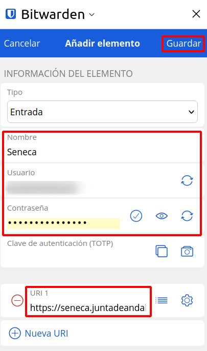
Completamos el formulario con los datos que nos solicita:
Ya tenemos las credenciales añadidas a nuestro gestor.
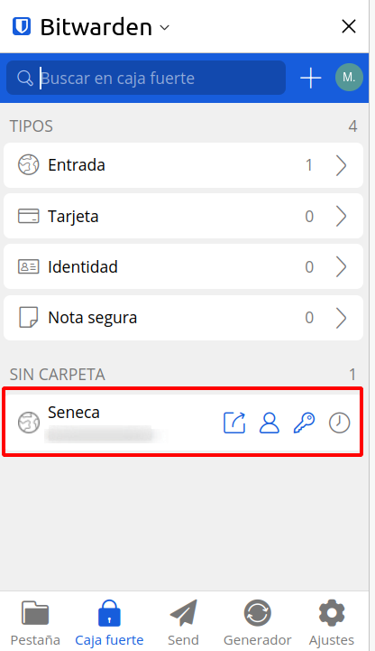
- Probamos el gestor: Si ahora accedemos al portal Séneca, veremos que Bitwarden nos está indicando que tiene guardadas las credenciales de esa aplicación.
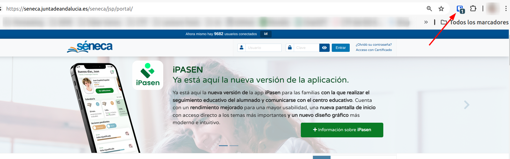
- Generar contraseñas seguras: Podemos usar el generador de bitwarden para crear contraseñas fuertes para tus cuentas nuevas o existentes. Para ello, abrimos la extensión del navegador y en la parte inferior, hacemos clic en "Generador":
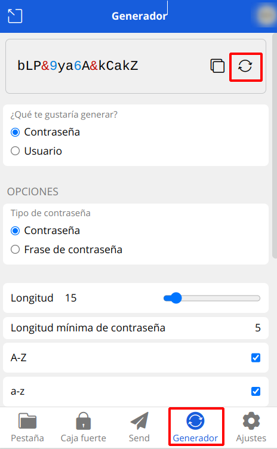
A partir de este momento, cuando nos registremos en una aplicación web o servicio, el gestor lo detectará y nos preguntará si queremos que guarde los datos.
Nota: Se ha elegido Bitwarden para este ejemplo debido a que su versión gratuita permite la instalación en múltiples dispositivos, facilitando la gestión de contraseñas en ordenadores, teléfonos, tablets, etc. Sin embargo, existen otros gestores de contraseñas que también ofrecen funcionalidades similares y pueden ser igualmente efectivos. Te invitamos a explorar diferentes opciones disponibles en el mercado para encontrar la que mejor se adapte a tus necesidades.